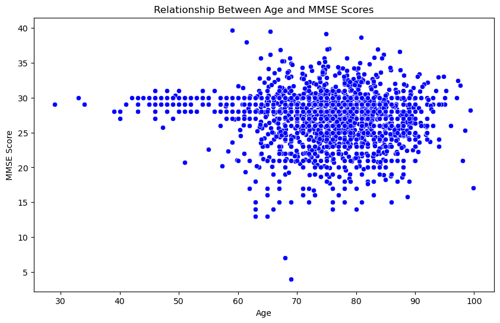
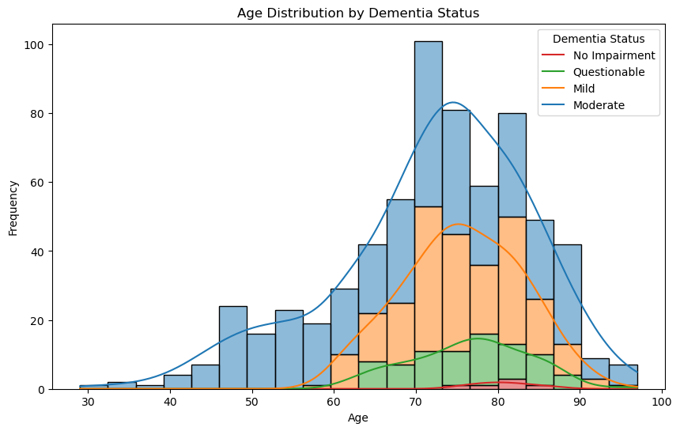
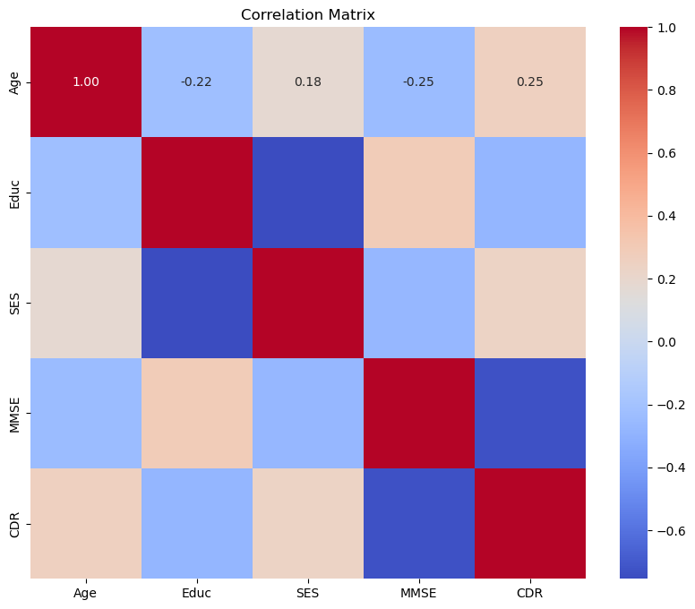

Overall Data Visualization

First an introduction to the data: OASIS dataset comprises MRI scans from about 1240 subjects aged 18-96, both
nondemented and demented older adults. The longitudinal data includes subjects scanned on two or more visits,
while the cross-sectional data includes subjects scanned at a single time point.
This scatter plot visualizes the relationship between age and Mini-Mental State Examination (MMSE) scores across
both longitudinal and cross-sectional datasets. The x-axis represents age, while the y-axis represents MMSE scores,
a measure of cognitive function. The blue dots indicate the overall distribution of age and MMSE scores in the combined dataset,
encompassing both longitudinal and cross-sectional data. This visualization aims to explore any potential trends or
patterns between age and cognitive function, providing insight into how cognitive performance may vary with age
across the entire dataset, and representing the demographics of the dataset as well.
Static Visualizations

Visualizing the age distribution provides insights into the demographics of the dataset and how age relates
to other variables. The age distribution of the OASIS dataset shows a wide range of ages, with the majority of individuals
between 60 and 80 years old. This distribution reflects the typical age range for Alzheimer's disease
diagnosis, which is most common in older adults. The dataset includes individuals with varying degrees of
cognitive impairment, from normal aging to severe dementia, allowing for a comprehensive analysis of brain
changes associated with AD progression. The mean and standard deviations are also displayed, with a mean of around
77 years old, which checks out with prior knowledge about Alzheimer's disease.

This boxplot displays MMSE (cognitive assessment) scores by dementia status, displayed in boxplot form.
Nondemented subjects have no symptoms of dementia, demented subjects do have symptoms, and converted
subjects developed symptoms over the course of data collection. The boxplot shows that nondemented subjects have
higher average cognitive assesment scores than demented subjects, demonstrating how MMSE scores can be used to
assess and seperate the patient groups within the data.

This is another histogram of age distribution, but this time there are bell curves and different shadings by
CDR, or Clinical Dementia Rating. CDR is a scale used to assess the severity of dementia, with 0 = no impairment,
0.5 = questionable, 1 = mild, 2 = moderate, and 3 = severe dementia. The histogram demonstrates that most of
the subjects in the dataset are of moderate or mild dementia diagnosis. There is no severe dementia patients
because the dataset is cross-sectional, and severe dementia patients would not be able to participate in the study.
It also shows that the majority of the more severe cases are in the older age group, which further clarifies the
demographic of the dataset and higher prevelance of dementia and Alzheimer's disease in older adults.

Correlation Matrix Heatmap of data categories in the CSV, so that clarity can be achieved for which directions
to go in terms of further data analysis and visualization.
Interactive Visualizations
This is an interactive scatter plot built using Altair that visualizes the relationship between normalized whole
brain volume (nWBV) and Mini-Mental State Examination (MMSE) scores. The x-axis represents nWBV, a measure of
brain volume, while the y-axis represents MMSE scores, a measure of cognitive function. The scatter plot includes
a trend line that shows the relationship between nWBV and MMSE scores, indicating that higher nWBV values are
associated with higher MMSE scores. This visualization allows us to explore the relationship between brain
volume and cognitive function and identify patterns or trends in the data. The points are shaded by socioeconomic
status, on a scale of 1-5. All data points, when hovered over, show the nWBV, MMSE, and SSE.
This is an interactive heatmap that compares brain structures across different diagnostic groups, specifically
Estimated Total Intracranial Volume (eTIV) in Nondemented, Demented, and Converted patients. If a quadrant
is hovered over, the participant ID, eTIV, and diagnostic group are displayed. The heatmap demonstrates that a
smaller eTIV is associated with a higher likelihood of dementia diagnosis, indicating that brain atrophy may be
a key factor in the development of Alzheimer's disease. The heatmap also shows the distribution of eTIV values
across different diagnostic groups, providing insights into the differences in brain structure between nondemented
and demented patients.
This second interactive heatmap displays socieconomic score (SES) across the different diagnostic groups, while
hovering over a quadrant reveals the diagnostic group, SES, average age, education, and gender. The heatmap shows
a higher SES is associated with a lower likelihood of dementia diagnosis, indicating that socioeconomic factors
may play a role in the development of Alzheimer's disease. The heatmap also provides insights into the distribution
of SES values across different diagnostic groups, highlighting the differences in socioeconomic status between
nondemented and demented patients.
Summary
Brain Size: Higher eTIV and nWBV seem to indicate higher MMSE score which indicates brain shrinkage in specific areas is correlated with cognitive decline.
Socioeconomics and Education: While AD is influenced by gene, lower SES and education could correlate to dementia diagnosis due to environmental, upbringing, and epigenetics factors.
Age: The stark spike in cases of dementia past the 70 mark confirms the demographic, and can give timelines when
searching for indications of AD.
Significance: Due diligence of examining these specific brain atrophies and how they develop quantitatively and visually,
especially in those who are at higher risk of AD through these social, economic, and/or age factors, could help spur early
diagnosis, which is absolutely crucial and combatting AD and maintaining quality of life for patients and their families.